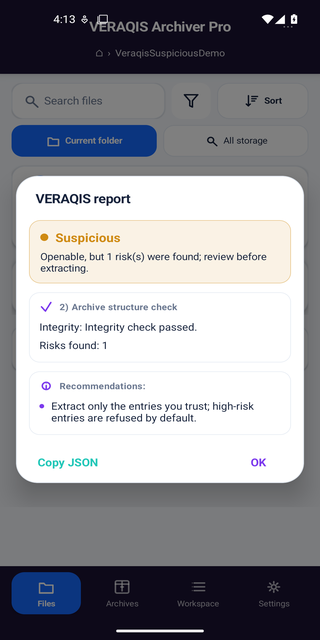
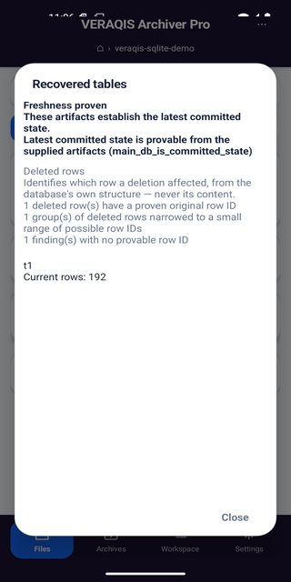
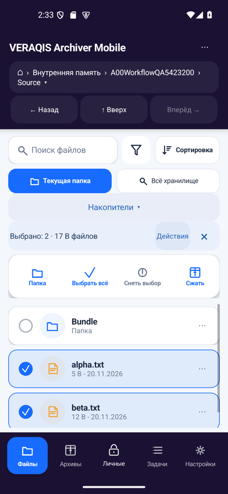
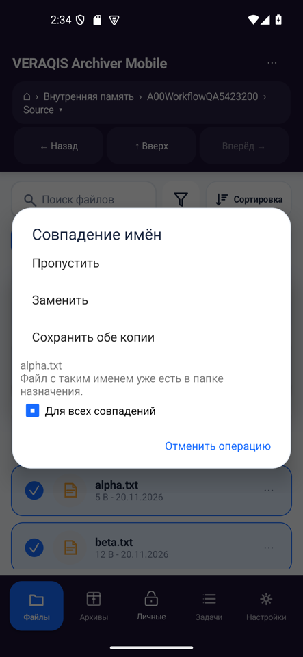
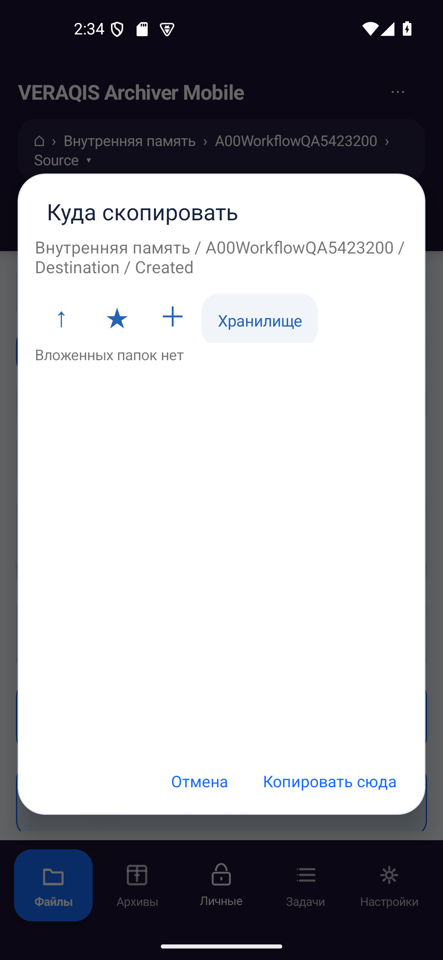
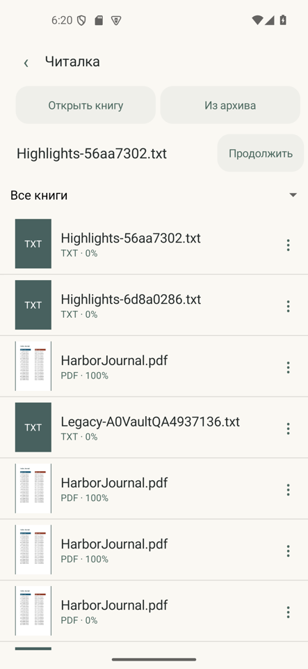

VERAQIS Archiver Mobile for Android
Files, archives and a reader in one offline app. An archive is checked before you open it, and a copy is read back and verified with SHA-256 before it is committed.
Android 8.0+ · version 2.10.0 · offline · no network permission · beta
No account and no telemetry. The app declares no INTERNET
permission.
Distributed as a directly verifiable signed APK during beta for sideload testing. A Google Play listing is planned after internal testing, Play App Signing and permissions review. Signing details are on the download page.
tech.veraqis.archiver.mobile and its own signing
certificate — so Android installs it next to Archiver Pro instead of updating it, and Pro's app
data stays with Pro. The archive-safety and SQLite features below are the ones Pro 1.8.0
shipped; the file manager, reader and private files are new in the 2.x line.
What it does today
Implemented in the 2.10.0 build and covered by its release checks. Recovery on the phone is deliberately narrow — see the limits further down.
A file manager that checks its own work
Select files and folders and see the count and known size at once. Copy, move and extract go through one destination picker with the current path, the parent folder, favourite and recent folders, a new-folder button and other storage.
A copy is written to a temporary file and read back to verify its SHA-256. Replacing a file keeps the old one until the new copy is committed, and a move checks the source before it deletes it. When names collide you choose: skip, replace, keep both, apply to all, or cancel. The result lists copied, moved, skipped, failed and cancelled items separately.
Safety scan before open
A read-only scan classifies the archive — Safe, Suspicious, Blocked, Encrypted or Unsupported — before any content is opened. You decide with the facts in front of you.
“Safe” means structurally safe to extract. File contents are not checked for malware — VERAQIS Archiver is a structural safety inspector, not an antivirus.

Safe listing and extraction
See the entries an archive contains without extracting them, with unsafe paths (traversal, absolute, reserved names) flagged rather than followed. Extraction is transactional and stays inside the destination you pick — entries that fail a safety or integrity check are not written.
ZIP and RAR4/RAR5 archives can be created, tested and extracted; a split RAR archive opens when you select all of its volumes.
Books and PDFs
A library with import from ZIP and RAR, continue-where-you-left-off, highlights and notes with export, reading themes, and read-aloud. PDFs get margin cropping, a two-column mode, zoom, bookmarks and a remembered position.
Private files
A private section behind the device PIN or biometrics, which locks again when you leave the app. A private PDF opens with screenshots blocked. In the release checks a private PDF moved back out came back byte-for-byte identical.
SQLite row recovery, on-device
Recovers rows from a damaged SQLite database entirely on the phone, in an isolated process. Reports whether the current state is provably fresh or not — never guesses — and can bound or prove the row ID of a recently deleted row from the database's own structure, never from content.

Screens from the 2.10.0 release checks
Captured on an Android emulator while the 2.10.0 release was being tested, with the interface set to Russian. Folder and file names are test fixtures. These are real screens, not mockups.




Honest handling of hard cases
Mobile follows the same rule as the rest of VERAQIS: report the truth, never fake a result.
- Encrypted archives are detected and reported as encrypted. Archive passwords are not saved; VERAQIS never recovers or guesses passwords and never bypasses restrictions.
- Unsupported formats are detected and reported honestly rather than guessed at.
- Damaged ZIP files: the app recovers only the entries whose CRC-32 still matches, or recovers from a backup copy of the archive that you select. It does not emit anything an independent check cannot confirm. For a deeper look at a damaged ZIP, use verified ZIP recovery in your browser.
- SQLite row recovery can bound or prove a deleted row's original row ID from the database's own structure — never its content, and never a guess when the structure can't prove one.
- No background queue yet. Copy and move run while the app is open. Completed items stay in place on cancel and the unfinished item is cleaned up as far as the storage allows; if a temporary or backup file cannot be removed, the app names it. A force-stop or power loss is not handled like Cancel, and there is no automatic resume.
- Some storage providers refuse safe operations. Where a provider does not support safe rename or a nesting check, the operation stops with an error instead of continuing unsafely.
Languages
The archive and safety screens ship in 14 languages: complete in seven, core strings only in the other seven. The file manager and reader screens added in 2.x are in English and Russian.
Core strings only: Deutsch, Français, 日本語, 한국어, Türkçe, Tiếng Việt, Bahasa Indonesia. Translations are reviewed for key parity and placeholder safety; native-speaker polish is ongoing during beta.
Mobile questions
The current Android beta scope, stated without over-claiming.
What does VERAQIS Archiver Mobile do?
It is an offline file manager, archiver and reader for Android. It scans archives before opening, extracts safe entries into a folder you choose, verifies copies with SHA-256, reads books and PDFs, and keeps private files behind the device lock.
Does it update VERAQIS Archiver Pro 1.8.0?
No. Archiver Mobile has a different package name and signing certificate, so Android installs it as a separate app next to Archiver Pro. Pro's app data stays with Pro.
Does the mobile app perform deep recovery?
Not full archive repair. For a damaged ZIP it recovers the entries whose CRC-32 still matches, or recovers from a backup copy of the archive that you select. For SQLite databases it recovers rows on-device and, from the database's own structure alone, can bound or prove a deleted row's original row ID. It never invents content and never guesses an ID it cannot prove.
Does VERAQIS Archiver store passwords?
No. Archive passwords are not saved. Passwords, when supplied, are handled as transient character data and are not stored in models or logs.
Why does the app ask for access to all files?
To work as a file manager it requests Android's all-files access. Folders on other storage
providers are opened through the Android system picker, with the permission you grant
there. The app declares no INTERNET permission.
Is an iOS version available?
No iOS build is available or scheduled for this beta. The current client is Android-specific; an iOS version would require a separate implementation and review.
How 2.10.0 was checked
From the release report for this exact APK. Full figures are in the test record.
764 instrumented checks, 0 failures
238 functional checks on each of Android 8.0, 14 and 15, plus 50 layout checks — including a 320 dp screen at 150% font size with animations off.
71 UI check groups
Real taps through 19 scenarios and Android's own document provider. A cancelled recursive move kept all 400 source files and left no partial folder or temporary files behind.
Reproducible package
A rebuild from the build kit matched the tested APK in all 205 ZIP entries, byte for byte. APK signature schemes v2/v3 and 16 KiB alignment were verified.
Out-of-space, corrupted-write and failed-delete cases were produced by injecting those failures through a test storage adapter, not by filling a real disk. The APK contains native libraries for arm64-v8a and x86_64 (the VERAQIS engine, RAR and e-book support); the licences of bundled third-party components ship inside the app.